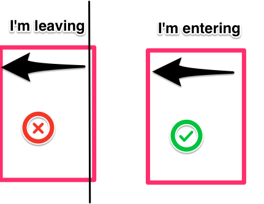

ng-animate
Animations in AngularJS: Control Your UI
Cam Jones @23limes
Table of contents
2 Types of Animations
- CSS Animations
- Javascript Animations
//both types inject the same module
angular.module('myapp', ['ngAnimate']);
CSS - Supported Directives
Events: enter, leave
ng-view, ng-include, ng-switch, ng-if
Events: enter, leave, move
ng-repeat
Events: add, remove
ng-show, ng-hide, ng-class
CSS - Enter/Leave
CSS classes applied:
.ng-leave-active, .ng-leave, .ng-enter-active, .ng-enter
CSS Demo
(click image to view Plunkr)
Javascript - event template
angular.module('myApp').animation('.my-class-name', function() {
return {
event: function(elem, done){
//logic of animation
done();
}
};
});
Javascript Demo
(click image to view Plunkr)
Final thoughts
- Well Thought Out, but...
- Not Intuitive
- Please Play with the Plunkr's
- Tweet me your cool animations, I want to see them!